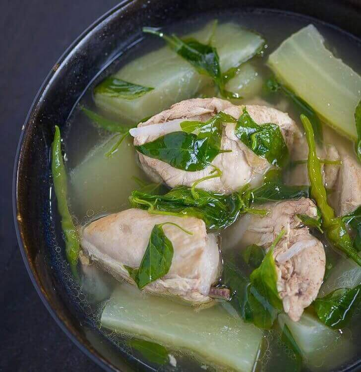

Chicken Tinola

Description
Tinola is a Filipino
soup usually served as
a main course with white rice.
Traditionally, this dish is cooked with
chicken or fish, wedges of papaya and/or
chayote, and leaves of the siling labuyo
chili pepper in broth flavored with ginger,
onions and fish sauce.
Ingredients
- chicken
- rice
- green papaya
- garlic
- onion
- ginger
- fish sauce
- hot pepper leaves
- ground black pepper
Steps
- Sauté the garlic, onion, and ginger
- Put-in the chicken and cook until
color turns light brown
- Add the fish sauce. Stir. Pour rice
washing into the cooking pot. Let boil.
Cover the pot and simmer for 45 minutes.
Note: add water if needed.
- Add green papaya. Cook for 5 minutes
- Add the hot pepper leaves or malunggay
leaves. Stir and cook for 1 minute.
- Season with ground black pepper. Note
: you can also add fish sauce or salt if
needed.
- Transfer to a serving bowl. Serve hot.
Share and enjoy!
NEXT